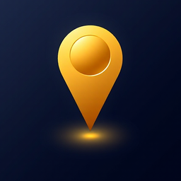

Mapa de spots y minas de oro, con análisis de puntos e identificación de minerales con IA
Spots con puntuación explicada, minas de oro conocidas, análisis de cualquier punto del mapa e identificación de minerales con IA. Estimación indicativa: no garantiza oro.
Actualizado el
Próximamente en el App Store, para iPhone y iPad
Qué es GoldSpot
GoldSpot es una app para iPhone y iPad que enseña en un mapa del mundo dónde es más probable encontrar oro aluvial (el de arroyos y ríos), junto a las minas de oro conocidas. Cada spot lleva una puntuación de 0 a 100 con los factores que la explican. Es una estimación indicativa: no garantiza que haya oro.
Importante: la puntuación de GoldSpot es una estimación indicativa y relativa, no una probabilidad ni una garantía de que haya oro. Buscar oro está regulado: pide los permisos que hagan falta y respeta la propiedad, la ley y las zonas protegidas. Las minas abandonadas son peligrosas: no entres. Una foto no basta para saber si algo es oro: confírmalo con pruebas caseras o con un análisis.
Lo que consigues
- Spots con puntuación explicada: Más de 46.000 zonas del mundo con una puntuación de 0 a 100 y los factores que la explican: roca fuente aguas arriba, cercanía de un cauce, terrazas antiguas, minas cercanas y más. La puntuación es relativa: compara sitios entre sí, no es una probabilidad.
- Minas de oro conocidas: Más de 95.000 minas, labores e indicios de oro de servicios geológicos públicos, con su estado (activa, abandonada o desconocido) y su fuente. Los spots y las minas van dentro de la app y se consultan sin conexión.
- Analizar este punto: Mantén pulsado cualquier lugar del mapa, o usa «Mi ubicación», y GoldSpot calcula en tu móvil, gratis, la puntuación de ese punto con el relieve de la zona. Sin conexión da una puntuación parcial con confianza baja.
- Identifica un mineral con una foto: Haz una foto de una piedra, una pepita o lo que te queda en la batea y la IA dice qué mineral parece, si podría ser oro (frente a pirita, calcopirita o mica dorada) y cómo comprobarlo en casa. Nunca promete oro: ante la duda, dice «dudoso». Hasta 40 análisis al día por cuenta.
- Un mapa para leer el terreno: La foto de satélite de Apple en 3D, con capas que enciendes o apagas: pueblos y carreteras, sendas y pistas, arroyos y fuentes y curvas de nivel, además del mapa de calor, la geología y los cauces. Con la cruz del mapa lees la altitud, la pendiente y la orientación del punto.
- Tus sitios y tus hallazgos, también anónimos: Guarda tus sitios (privados hasta que los compartas), ve hasta ellos con mapa y brújula y publica spots y pepitas con hasta 8 fotos, sin tu nombre si quieres: con la hora redondeada al día y las fotos limpias de metadatos. Añade amigos con un código.
Gratis y Pro
Se descarga gratis y todas las funciones están en la versión gratuita, que en iPhone y iPad lleva anuncios de Google AdMob: un banner y, antes de cada análisis de un mineral con IA, un vídeo corto a pantalla completa (un anuncio recompensado); sin verlo, la foto no se analiza. GoldSpot Pro, por suscripción mensual o anual de la App Store, quita el banner y los vídeos; el precio se ve en la app antes de pagar, con 7 días de prueba gratis cuando la App Store la ofrece. Se renueva sola salvo que la canceles al menos 24 horas antes de que acabe el periodo, en Ajustes › tu nombre › Suscripciones del iPhone. Analizar un punto del mapa se calcula en tu móvil y es gratis. Hay un máximo de 40 análisis de fotos al día por cuenta, con Pro o sin él.
Plataformas
Funciona en iPhone y iPad con iOS o iPadOS 15 o posterior. Hace falta conexión a internet para el mapa y la foto de satélite, el relieve de «Analizar este punto», identificar minerales y publicar; los spots y las minas se consultan sin conexión.
Tus datos
La cuenta es solo un nombre, sin correo ni contraseña. Tus spots son privados hasta que los compartas. Lo que publicas como anónimo no lleva tu nombre ni la hora exacta y sus fotos salen sin metadatos, aunque el desarrollador sí puede ver quién lo publicó. La foto con la que identificas un mineral va a Anthropic (Claude) y no se guarda si no la publicas. Tu ubicación solo sale del móvil cuando guardas un spot o publicas con ubicación. Lo cuenta todo la política de privacidad.
Qué no hace
- No garantiza que haya oro: la puntuación es una estimación indicativa y relativa, y una foto no basta para saber si algo es oro.
- No da permiso para buscar en ningún sitio ni comprueba por ti las zonas protegidas: respeta la ley y los permisos de cada lugar.
- No identifica un mineral sin conexión ni, si no eres Pro, sin ver antes el vídeo.
- No publica tus spots: son privados hasta que los compartas con amigos o en el muro.
- No oculta quién publica al desarrollador: el anonimato es frente a los demás usuarios, no frente al operador del servidor.
Preguntas frecuentes
¿GoldSpot me garantiza que voy a encontrar oro?
No. La puntuación es una estimación indicativa y relativa que compara sitios entre sí; no es una probabilidad. Una zona marca dónde mirar, no dónde cavar, y que haya una mina cerca puede no significar nada si está agotada. Tampoco una foto basta para saber si algo es oro: la identificación con IA es orientativa y hay que confirmarla con pruebas caseras o con un análisis.
¿Qué es un spot y cómo se calcula la puntuación?
Un spot es una zona del mapa (un punto con un radio) donde, según el cálculo, es más probable encontrar oro aluvial. La puntuación, de 0 a 100, suma factores como la roca fuente aguas arriba, la cercanía de un cauce, el tamaño de la cuenca, los fondos de valle, las terrazas antiguas, las rupturas de pendiente, las confluencias, los aluviales, las minas de oro cercanas y el oro en sedimentos, y la ficha de cada spot dice por qué aparece. Un spot puede ser científico (lo dice el cálculo), de buscadores (pistas como labores antiguas o zonas oficiales de bateo) o ambos.
¿Cómo identifica GoldSpot un mineral?
Con una foto que haces con la cámara o eliges de la galería. Una función de nuestro servidor la envía a un servicio de inteligencia artificial (Claude, de Anthropic) que dice qué mineral parece, y, si Claude no responde, a Google Gemini como respaldo; qué señales se ven, si podría ser oro y qué pruebas caseras seguras sirven para confirmarlo. Siempre tiene en cuenta los parecidos, como la pirita, la calcopirita y la mica dorada, y ante la duda responde «dudoso». Hay un máximo de 40 análisis al día por cuenta, y hace falta conexión a internet.
¿Puedo publicar spots y hallazgos sin que se sepa que son míos?
Frente a los demás usuarios, sí: «Publicar como anónimo» viene activado de partida. Lo anónimo no lleva autor, enseña el día y no la hora, y sus fotos se limpian de metadatos en el servidor. Hay límites: el desarrollador, que administra el servidor, puede ver qué cuenta publicó cada cosa, y el contenido de una foto (una cara, un paisaje reconocible) no se puede limpiar. La política de privacidad lo explica con detalle.
¿Puedo buscar oro en cualquier lugar?
No. Buscar oro está regulado: en muchos sitios hace falta un permiso o una licencia, el terreno puede tener dueño o concesión minera, y en espacios protegidos o en algunos cauces puede estar prohibido. GoldSpot no da permiso para nada ni comprueba por ti las zonas protegidas: infórmate antes de ir y respeta la ley y los permisos de cada sitio.
¿Es gratis? ¿Qué incluye Pro y en qué aparatos funciona?
Se descarga gratis y funciona en iPhone y iPad con iOS o iPadOS 15 o posterior. Todas las funciones están en la versión gratuita, que lleva un banner y un vídeo corto a pantalla completa de Google AdMob antes de cada análisis de un mineral con IA. GoldSpot Pro, por suscripción mensual o anual de la App Store, quita el banner y los vídeos; el precio se ve en la app antes de pagar, con 7 días de prueba gratis cuando la App Store la ofrece. Analizar un punto del mapa se calcula en tu móvil y es gratis. Hay un máximo de 40 análisis de fotos al día por cuenta, con Pro o sin él.
Datos y atribuciones
GoldSpot usa datos abiertos de servicios geológicos y de otras instituciones. Estas son sus fuentes y sus licencias; la app las enseña también en «Avisos, fuentes y atribuciones».
Datos que lleva la app
- USGS Mineral Resources Data System (MRDS): dominio público (USGS)
- IGME-CSIC, base de datos minera BDMIN: CC BY 4.0
- SGU (Servicio Geológico de Suecia), Mineral resources: CC0
- Geological Survey of New South Wales, Mineral Occurrences (MetIndEx) y distritos de bateo: CC BY (Australia)
- Gobierno de Australia Occidental (DMIRS), MINEDEX: CC BY 4.0
- Gobierno de Victoria (Australia), Mineral Tenements: CC BY 4.0
- Nuevo Brunswick, Nueva Escocia, Alberta y Columbia Británica (Canadá): indicios minerales y títulos de placer: licencias de gobierno abierto de cada provincia
- BLM de EE. UU., concesiones mineras (MLRS): dominio público (obra federal de EE. UU.)
- Francia, Cadastre minier (Camino): Licence Ouverte 2.0 (Etalab)
- Wikidata: CC0
- HydroSHEDS y HydroRIVERS (relieve, dirección de flujo y red de cauces): uso con atribución (Lehner y Grill; acuerdo de HydroSHEDS)
- Macrostrat (mapas geológicos compilados: rocas y fallas): CC BY 4.0, con atribución a cada mapa de origen
- USGS, Open-File Report 97-470 (geología generalizada de Irán y de la antigua URSS): datos del USGS (dominio público en EE. UU.)
- Servicio Geológico de Canadá, Open File 5529 (Chorlton, 2007), geología generalizada del mundo: Open Government Licence – Canada
- Geoscience Australia: Surface Geology of Australia 1:2 500 000, Geochemical Atlas of Australia y modelo de paleovalles de West Musgrave: CC BY 4.0 y CC BY 3.0 AU
- GEMAS, geoquímica de suelos de Europa (publicada por el Servicio Geológico de Irlanda): CC BY 4.0
- GUM, Global Unconsolidated Sediments Map (Börker et al., 2018): CC BY 3.0
- Global Aridity Index and PET Database v3.1 (Zomer, Xu y Trabucco): CC BY 4.0
- GHS-SMOD (Comisión Europea, JRC), grado de urbanización: CC BY 4.0
- ETOPO 2022 (NOAA NCEI), elevación: dominio público
- Natural Earth, límites de países: dominio público
- GeoNames, ciudades y topónimos: CC BY 4.0
- NASA GIBS y Blue Marble (NASA Earth Observatory): imágenes de la NASA, con atribución
Mapas y servicios mientras usas la app
- Apple Maps (MapKit y MapKit JS), mapa y foto de satélite: © Apple
- OpenFreeMap, © OpenMapTiles, con datos de OpenStreetMap: © colaboradores de OpenStreetMap (ODbL)
- Terrain Tiles de Mapzen en AWS (SRTM de la NASA, 3DEP del USGS, GMTED2010, EU-DEM, ALOS y otras): relieve, curvas de nivel y altitudes
- Esri World Imagery (solo Android y web): Esri, Vantor, Earthstar Geographics y la comunidad de usuarios de GIS
- Instituto Geográfico Nacional de España, Mapa Topográfico Nacional: © IGN de España (CC BY 4.0)
- USGS The National Map, topográfico de EE. UU.: dominio público
¿Dudas o ideas? Escribe a gabrielmicovictoria@gmail.com o mira la ayuda y soporte.